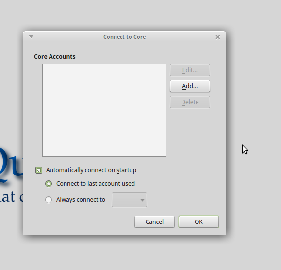

Quassel IRC is a modern, cross platform, distrubuted IRC client. It requires users to set up both hte server (QuasselreCore) and a client. The client attaches to the core, which saves all the IRC info. You can create new users that have seperate profiles and channels from each other, allowing multiple people to use the same core without messing up each others settings.
I will assume you have an ubuntu 14.04 Digital Ocean droplet to install your Quasselcore. When we install, we will be using the SQlite database so that we can use the manaers.py script later to add and manage multiple users.
SSH into server
add repository
|
|
Check that Quasselcore is running (I’m using sudo to display the process name)
Output should be almost identical to:
On client computer, add repo
|
|
Connect your Quassel Client to your server and follow the setup wizard.


